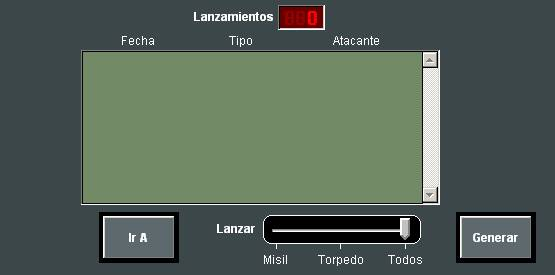

Generación de Informes
Mediante los siguientes diálogos el operador puede solicitar generación de los siguientes Informes:
Informe de Lanzamiento de Misil / Torpedo:

En la ventana aparece la lista de todos los lanzamientos de misiles y torpedos efectuados durante el Ejercicio para que el operador pueda seleccionar uno de ellos.
Se presenta la siguiente información para cada uno de ellos:
Con la barra de selección se puede filtrar la lista en función del tipo de lanzamiento (Misil, Torpedo o Todos). Bajo la lista se muestra el total de lanzamiento realizados en el Ejercicio.
Una vez realizada la selección del lanzamiento, se puede generar el informe pulsando el botón Generar. Si el informe ya ha sido generado, el botón Generar aparece insensitivo y se puede pulsar el botón Mostrar para ver el informe como un archivo de texto. El botón Mostrar permanece insensitivo mientras no se haya generado el informe correspondiente.
Informe de Reacción Anti-Misil / Torpedo:
En la ventana aparece a la izquierda la lista de todos los lanzamientos de misiles y torpedos efectuados durante el ejercicio para que el operador pueda seleccionar uno de ellos.
Se presenta la siguiente información para cada uno de ellos:
Con la barra de selección se puede filtrar esta lista en función del tipo de lanzamiento (Misil, Torpedo o Todos). Bajo esta lista se muestra el total de lanzamiento realizados en el Ejercicio.
En la parte derecha de la ventana se muestra la lista de unidades participantes en el Ejercicio para que el operador seleccione la unidad de la que se pretende estudiar su reacción. Se presenta la siguiente información para cada uno de ellas:
Una vez realizada la selección del lanzamiento y la unidad, se puede generar el informe pulsando el botón Generar. Si el informe ya ha sido generado, el botón Generar aparece insensitivo y se puede pulsar el botón Mostrar para ver el informe como un archivo de texto. El botón Mostrar permanece insensitivo mientras no se haya generado el informe correspondiente.
Informe de Reacción Ante Contactos Submarinos:
En la ventana aparece la lista de todos los submarinos y falsos ecos incluidos en el ejercicio para que el operador pueda seleccionar uno de ellos.
Se presenta la siguiente información para cada uno de ellos:
Con la barra de selección se puede filtrar la lista en función del tipo (Submarino, Falso Eco o Todos).
En la parte derecha de la ventana se muestra la lista de unidades para que el operador seleccione la unidad de la que se pretende estudiar su reacción. Se presenta la siguiente información para cada uno de ellas:
Una vez realizada la selección del posible contacto (submarino o falso eco de la lista de la izquierda) y la unidad que lo pudo detectar en algún momento (lista de la derecha), se muestra en la lista Fecha de la parte inferior de la ventana todos los instantes en que la unidad detectó por Sonar Pasivo, Sonar Activo o Sonoboya al submarino o falso eco previamente seleccionado. Una vez seleccionado un instante en esta lista, se puede generar el informe pulsando el botón Generar. Si el informe ya ha sido generado, el botón Generar aparece insensitivo y se puede pulsar el botón Mostrar para ver el informe como un archivo de texto. El botón Mostrar permanece insensitivo mientras no se haya generado el informe correspondiente.